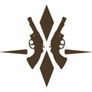

THANK YOU TO OUR SPONSORS
Bækkevolds Våpenservice
More about them
The Oxford Gun Company
More about them
Bækkevolds Våpenservice
Erik Bækkevold became a gunsmith in 2004, with a speciality within pistols and revolvers. In 2019 he founded a weapons workshop in Brumunddal. He has partnerships with several established weapon stores throughout the country as well as being the only Norwegian buisness with a technician certificate from Pardini.
Click to enter their website
The Oxford Gun Company

The Oxford Gun Company is an award winning family-run shooting ground that provides everything a shot could need. From first-timers, to the more experienced clay or game shot, they pride themselves in giving each and every shooter a tailored and personalised experience. Their instructors have over 145 years’ experience between them and founders Doug and Shirley Florent have been in the gun trade for nearly 50 years.
Click to enter their website!